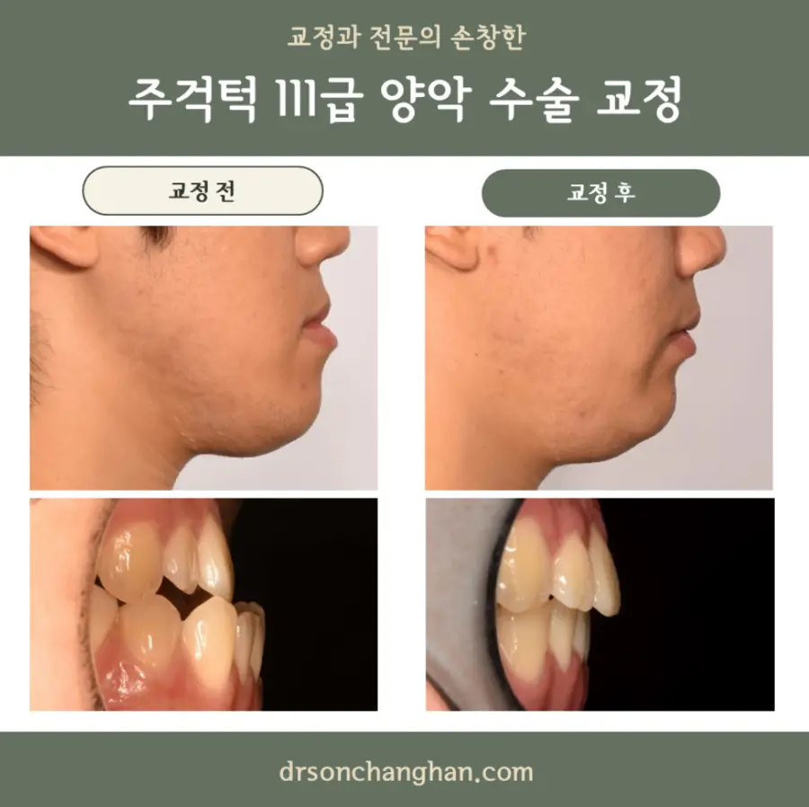
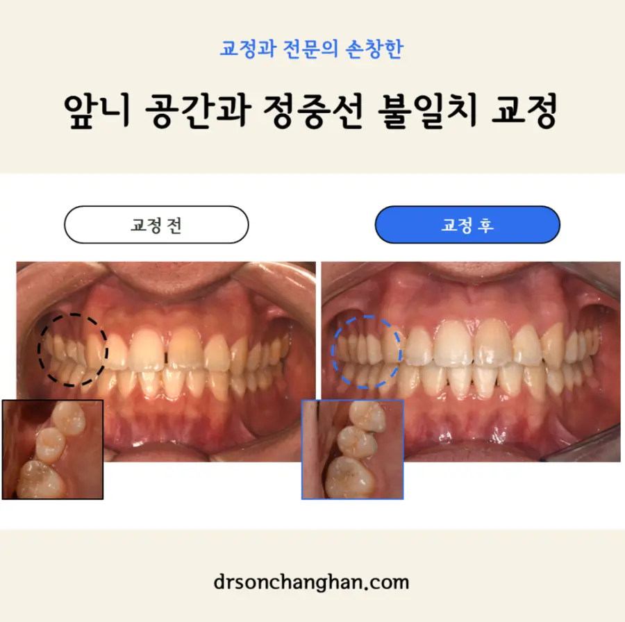
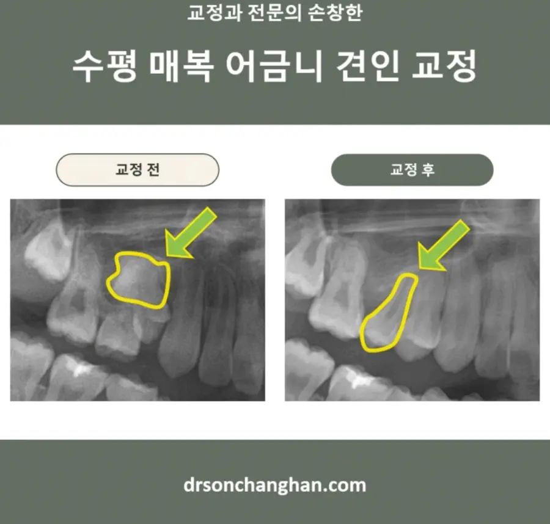

상담일기
진료실에서 자주 만나는 질문에 답합니다. 치료의 원리와 판단 기준을 교정과 전문의의 시선으로 설명합니다.
상담일기 보기 →
About the doctor
치료를 시작할 때는 충분히 이해하고,
치료를 마칠 때는 서로 납득할 수 있는 것.
그리고 몇 년 뒤 정기검진에서
웃으며 다시 만날 수 있는 것.
저에게는, 그것이 좋은 교정입니다.
Consultation Journal
상담실에서 실제로 자주 듣는 질문을 중심으로 씁니다. 먼저 짧게 답하고, 그 이유를 차근히 설명합니다.
양악수술은 전신마취와 수술을 동반하므로 위험이 전혀 없지는 않습니다. 다만 수술 전 평가, 마취·수술 중 감시와 수술 후 관리를 체계적으로 시행하면 위험을 줄일 수 있으며 개인별 위험도는 건강 상태와 수술 범위에 따라 달라집니다.
양악수술 후 티타늄 플레이트를 모든 환자가 반드시 제거해야 하는 것은 아닙니다. 이물감·염증·노출 또는 영상검사 방해처럼 제거를 고려할 이유가 있을 때 수술 부위와 시기를 함께 평가합니다.
인접한 유치 사이가 서로 맞닿기 시작하면 칫솔만으로 닦기 어려운 면이 생기므로 치실 사용을 고려할 수 있습니다. 어린아이는 보호자가 직접 도와 안전하게 사용하는 것이 중요합니다.
교정치료 중 치근흡수는 발생할 수 있지만 대부분은 임상적으로 큰 문제가 없는 범위에 머뭅니다. 치료 전 위험요인을 확인하고 정기 방사선검사로 변화량을 관찰하며 필요하면 교정력을 조절해야 합니다.
Clinical Cases
결과만 보여주기보다 어떤 문제를 진단했고, 왜 그 치료를 선택했는지 함께 기록합니다.


